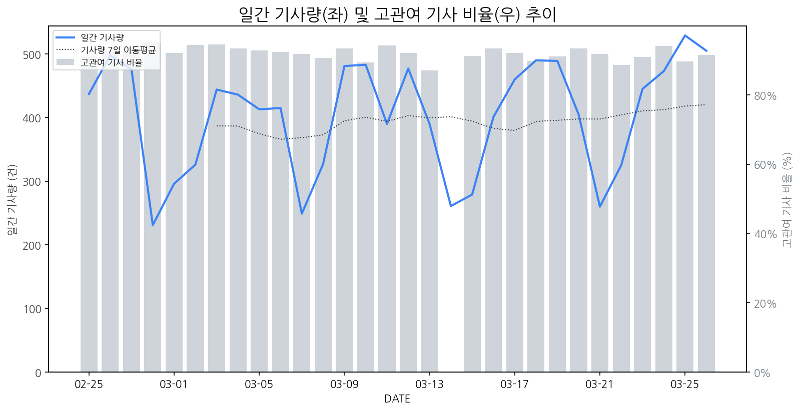

1
시장 활동 지표
기사량 추세 & 이상 징후 탐지
시장의 '전체 기사량'이 평소보다 비정상적으로 급증했는지(Spike)를 차트로 확인하고, LLM이 분석한 급등의 핵심 원인을 파악할 수 있음

고관여 기사란? 산업 연관 키워드로 수집된 기사들 중 디스플레이 키워드에 가중치를 반영하여 도출된 관련성 높은 기사
수집된 기사 수 (2026-03-26)
505
+3% WoW
기사량 변동 수준 (7일 이동평균 대비)
±6.7% 이하
2
오늘의 키워드
급격한 관심 ↑, 주목해야 할 키워드
1
올레드
+8.7σ
LG전자가 신형 올레드 TV 출시를 통해 밝기 및 AI 성능을 혁신적으로 향상시키며 프리미엄 TV 시장 공략을 강화했습니다.
Related Metrics
금일 언급량: 43, 전일 대비: +28
Interpretation
프리미엄 TV 시장 경쟁 심화
Next Step
'올레드' 관련 상세 기사 및 경쟁사 반응 모니터링
2
lg전자
+8.1σ
LG전자가 차세대 올레드 TV 신제품 '더 넥스트 올레드'를 공개하며 프리미엄 TV 시장의 경쟁력을 강화하고 나섰기 때문이다.
Related Metrics
금일 언급량: 60, 전일 대비: +22
Interpretation
프리미엄 TV 시장 선도
Next Step
'lg전자' 관련 상세 기사 및 경쟁사 반응 모니터링
3
tv
+8.0σ
LG전자의 신형 OLED TV 공개 및 프리미엄 TV 시장 경쟁 심화가 'TV' 키워드 급증의 핵심입니다.
Related Metrics
금일 언급량: 53, 전일 대비: +22
Interpretation
프리미엄 TV 시장 경쟁 심화
Next Step
'tv' 관련 상세 기사 및 경쟁사 반응 모니터링
4
oled
+7.0σ
삼성디스플레이가 QD-OLED 모니터용 '퀀텀 블랙' 필름을 개발하며 제품 경쟁력을 강화했습니다.
Related Metrics
금일 언급량: 42, 전일 대비: +37
Interpretation
QD-OLED 성능 향상
Next Step
핵심 토픽 'OLED_Topic' 관련 신호입니다. 3번 섹션(키워드 감성분석)에서 해당 토픽의 감성 변동을 교차 확인하세요.
3
실시간 Risk 키워드
경계해야 할 시그널 탐지
특정 토픽의 부정 감성 점수가 급등할 때 이를 즉시 탐지하고, "근거 기사" 링크를 통해 리스크의 실체를 빠르게 파악할 수 있음
키워드 분석 결과, 오늘은 걱정할 만한 하락 신호가 없습니다. (부정 언급량 변화: +1.5σ 이내)
4
주요 이벤트 모니터링
실시간 산업 동향 파악을 위한 주요 활동
최근 발생한 주요 기업들의 신제품 출시, 투자 등 주요 이벤트를 제공하여 매일 경쟁사 동향을 확인할 수 있음
LG전자가 기존 대비 4배 밝아진 화면과 초저반사 기술을 적용한 차세대 TV 신제품을 공개하며 기술력을 선보였습니다. 이는 '가전 명가'로서의 위상을 회복하고 프리미엄 TV 시장에서의 입지를 강화하려는 전략의 일환입니다.
Impact
LG전자의 혁신적인 신기술 도입은 프리미엄 TV 시장의 기술 경쟁을 심화시키고, 소비자들의 디스플레이 화질 및 시청 경험에 대한 기대치를 더욱 높일 것으로 예상됩니다.
Next Step
경쟁사들은 LG전자의 신기술을 분석하고, 자체 기술 개발 및 차별화 전략 수립을 통해 시장 점유율 방어 및 확대를 모색해야 합니다.
네이버는 AI, 커머스, 플랫폼 등 다양한 분야에서 기술 혁신과 신뢰 구축을 통해 성장을 지속하고 있습니다. 이는 네이버가 단순 검색 엔진을 넘어 종합적인 디지털 생태계 구축에 주력하고 있음을 시사합니다.
Impact
네이버의 AI 및 플랫폼 기술 발전은 향후 디스플레이 제품에 탑재될 AI 기반 서비스와 사용자 경험 향상에 대한 수요를 증대시킬 수 있습니다.
Next Step
AI 기반 디스플레이 솔루션 개발 및 고도화, 사용자 인터페이스(UI)/사용자 경험(UX) 개선을 통해 네이버와 같은 플랫폼 기업과의 시너지를 창출할 방안을 모색해야 합니다.
AI와 네트워크의 융합이 본격화되며 통신 기술 트렌드에 큰 변화가 예상됩니다. 이는 올해 주목받을 핵심 기술 동향으로 제시되었습니다.
Impact
AI 연산 능력 증대 및 실시간 데이터 처리가 중요해짐에 따라, 디스플레이는 고해상도, 저지연, 고대역폭 통신을 지원하는 기술 발전에 더욱 속도를 낼 필요가 있습니다.
Next Step
AI 및 네트워크 융합 트렌드에 맞춰, 디스플레이의 지능화 및 통신 성능 강화를 위한 R&D 투자를 우선적으로 고려해야 합니다.
신소재경제 신근순 국장이 연재기고를 통해 디스플레이 시장의 최신 동향과 신기술에 대한 인사이트를 제공합니다. 이 기고는 시장의 주요 이슈와 미래 전망을 다룰 것으로 예상됩니다.
Impact
이 연재기고는 디스플레이 시장의 기술 발전 방향과 투자 기회를 조명하며, 관련 기업들의 전략 수립에 중요한 참고 자료가 될 수 있습니다.
Next Step
연재 내용에 대한 면밀한 분석을 통해 신기술 트렌드를 파악하고, 자사 기술 개발 및 사업 전략에 반영할 수 있는 방안을 모색해야 합니다.